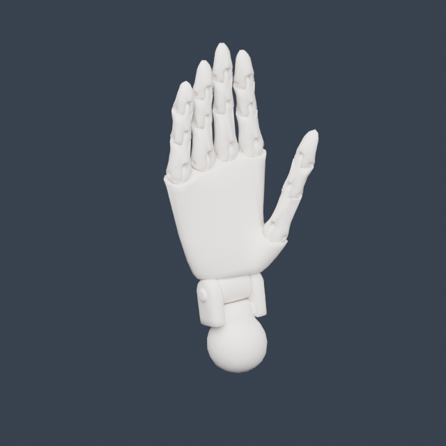
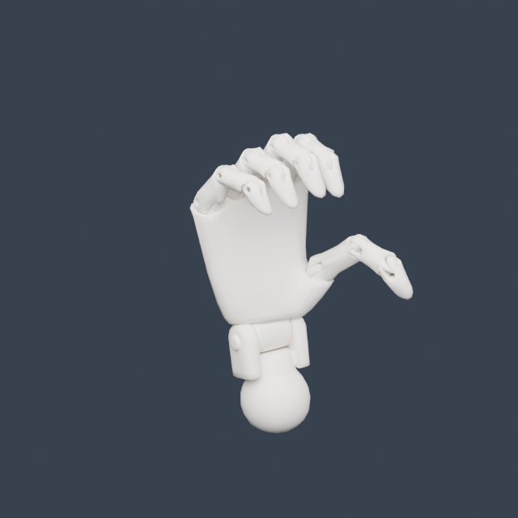
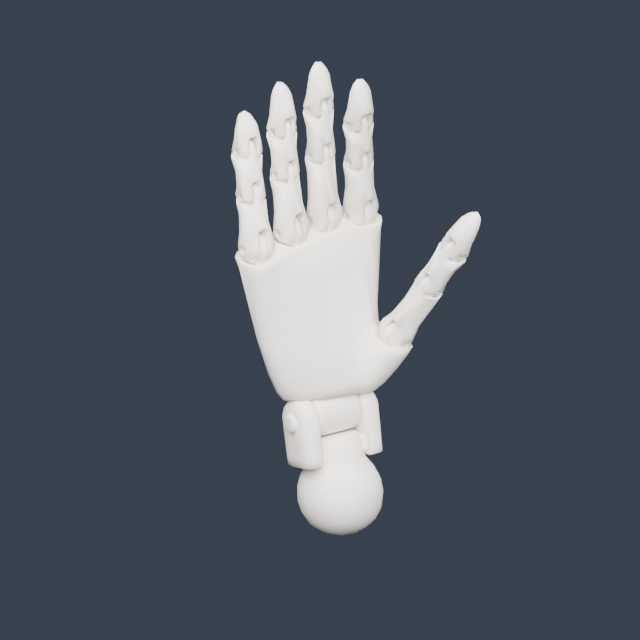
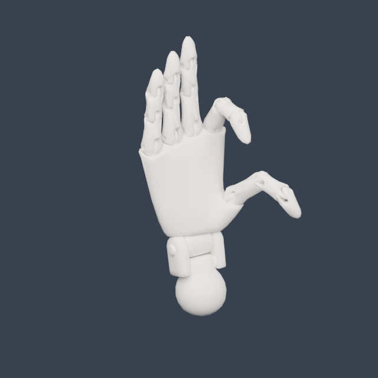
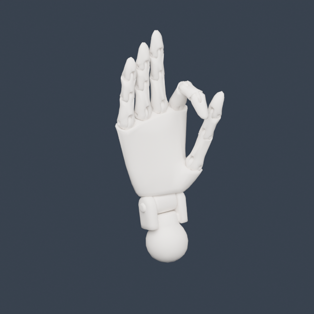
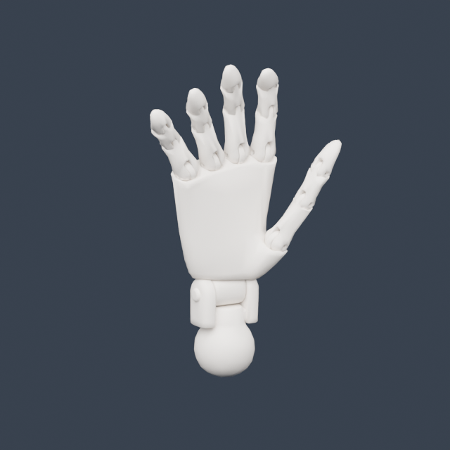
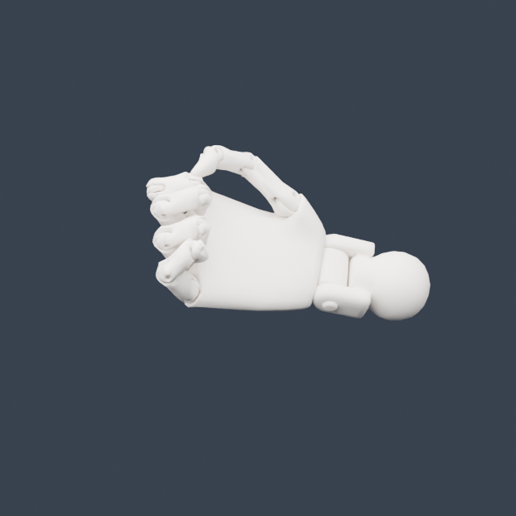
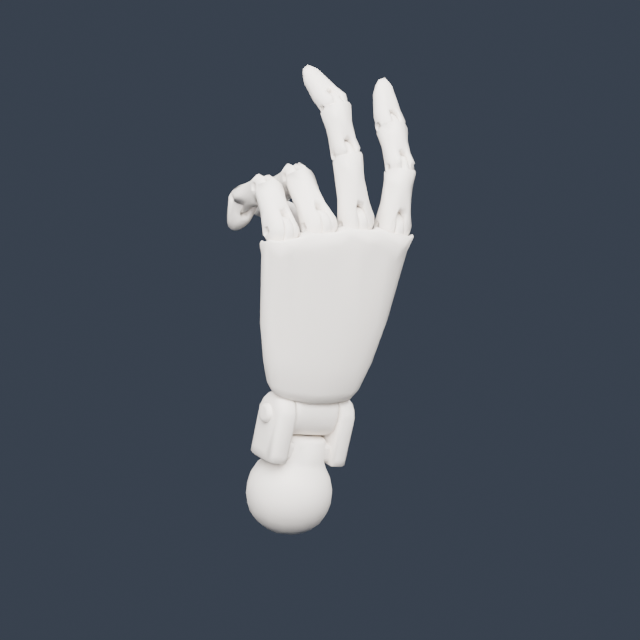
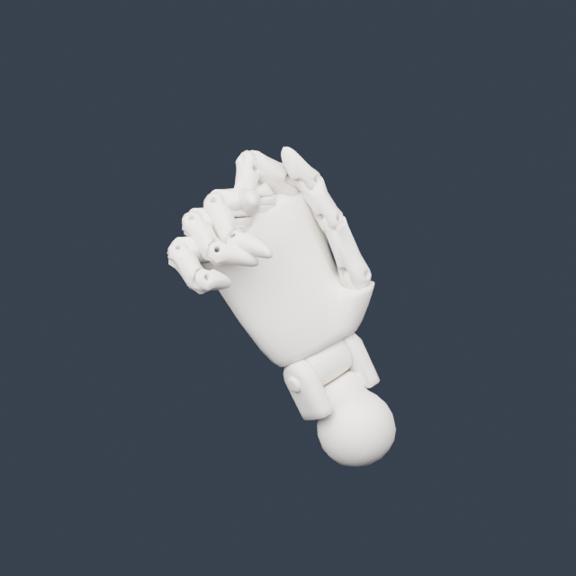

These Blender 5.2 renders use the exact joint transforms exported from the browser. Knuckle positions and finger proportions stay fixed; tracking rotates each segment.
Open game · Interactive hand check · Download Blender file · Attachment measurements









Photo cases use MediaPipe landmarks. The tracker did not detect one other reference photo; it is not included as a successful pose. This is a rigid doll model, so mechanical seams remain visible.